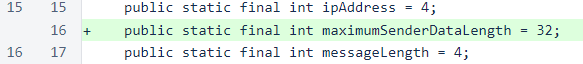
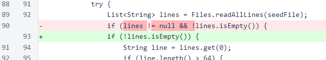
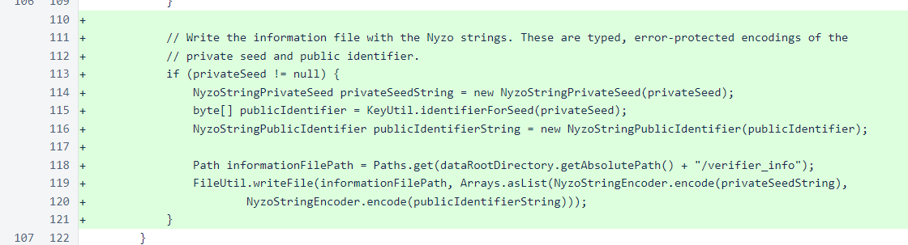
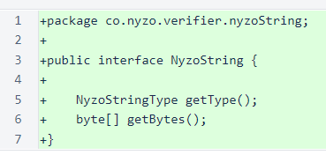
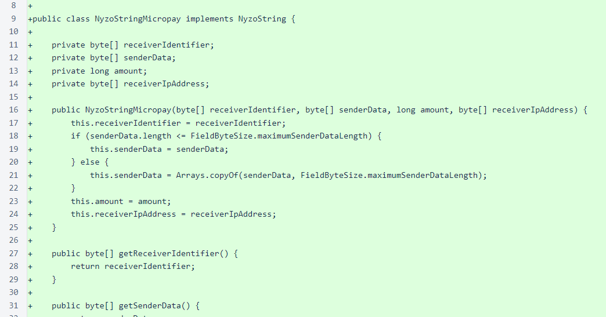
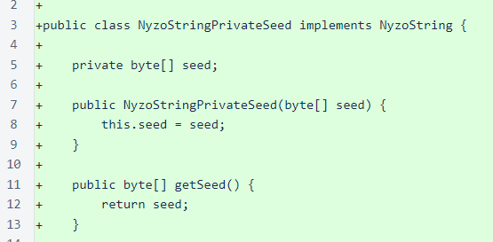
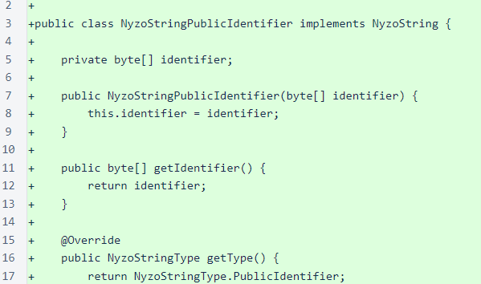
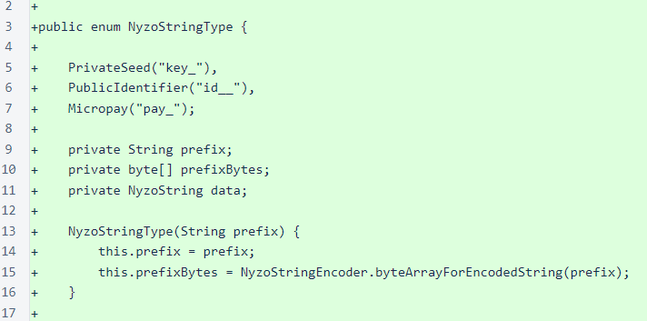
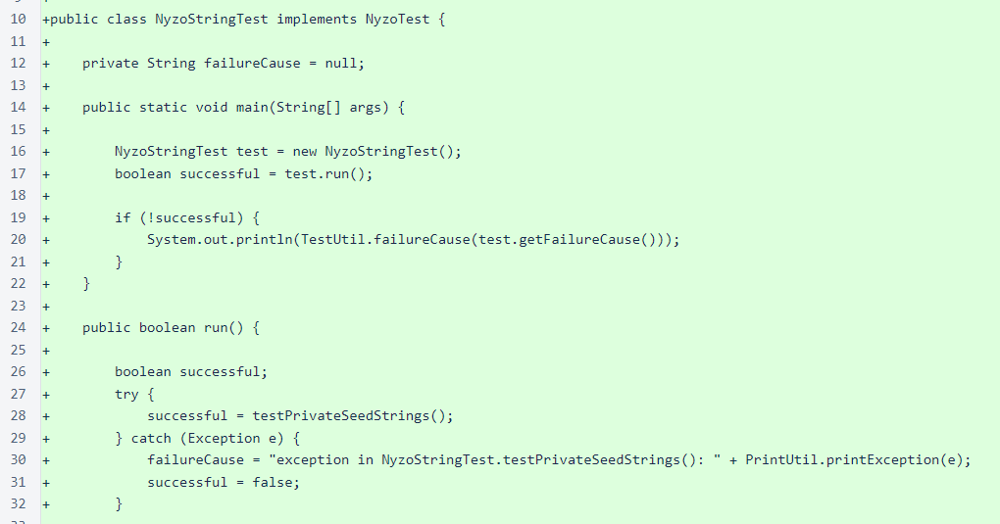
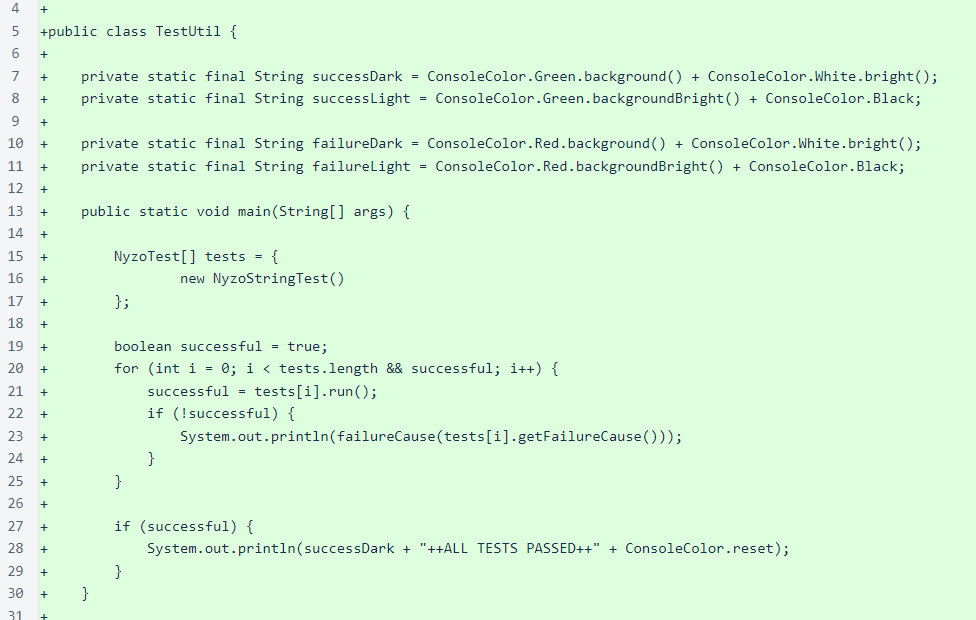

Nyzo version 524 (commit on GitHub) adds Nyzo string objects for private seeds, public identifiers, and Nyzo Micropay transactions.
This version does not meaningfully affect the behavior of the verifier, sentinel, or client. It only provides basic functionality that will be used by later versions of Nyzo.
Nyzo strings are typed, error-protected encodings of data used by Nyzo. All Nyzo strings use the same basic format: a 3-byte type, a 1-byte length specifier, a data array (the actual object), and a 4- to 6-byte checksum. The encoding stores 6 bits per character, so each set of 3 bytes is encoded by 4 characters. The checksum is of variable length to ensure that the number of bytes encoded is always divisible by 3.
In FieldByteSize, a constant has been added for the maximum byte length of transaction sender data. This improves the readability of some code in the NyzoStringMicropay class.
In Verifier, an unnecessary null check was removed. This does not change the behavior of the code, as Files.readAllLines() never returns null.
Each time the verifier starts, the private seed is loaded. A new file, verifier_info, is now written with Nyzo strings for the private seed ("key" prefix) and public identifier ("id" prefix). This file is written every time the verifier is started to ensure that it remains consistent with the contents of the verifier_private_seed file.
A new package, co.nyzo.verifier.nyzoString, has been added to contain the Nyzo string code. A new interface, NyzoString, is implemented by all objects that encode to Nyzo strings.
The NyzoStringEncoder class provides encoding and decoding of Nyzo strings. Objects that implement the NyzoString interface provide the bytes for the prefix and the data. The encoder assembles an array of the prefix bytes, a length byte to indicate the length of the data array, and the actual data array. It then computes and attaches a checksum to the end of the array. The final Nyzo string is a 3-byte-to-4-character encoding of the assembled byte array. The character table, which encodes 6 bits per character, uses the Arabic numerals, most letters of the English alphabet in both uppercase and lowercase, and a few symbols to bring the table size to 64 characters.

The NyzoStringMicropay class bundles a receiver identifier, sender data, and transaction amount into a single Nyzo string. It also includes a receiver IP address to tell a client where to forward the signed transaction. This string type will be used in an upcoming Nyzo micropayments system.
The NyzoStringPrivateSeed class stores a seed for a private key. This type of string will replace private-key image files moving forward, and a tool will be provided for converting Nyzo image files to Nyzo strings.
The NyzoStringPublicIdentifier class stores a public identifier. This type of string will replace public-identifier image files moving forward.
The NyzoStringType enumeration provides structure to the prefixes that denote types for Nyzo strings. The character prefix of each string is actually the encoded representation of a 3-byte prefix, and all characters used in a prefix must be in the character-lookup table of the Nyzo string encoder. For improved readability, the encoded (human-readable) prefix is written into the code, and it is decoded and used for building strings of that type.
A test class was added for generating 100,000 of each type of NyzoString, encoding those objects, decoding those objects, and comparing them to the generated objects.
To run this test, run the following command from the nyzoVerifier directory:
java -jar build/libs/nyzoVerifier-1.0.jar co.nyzo.verifier.tests.NyzoStringTest
The tests also allow ANSI console colors. To activate console colors, place the line enable_console_color=1 in /var/lib/nyzo/production/preferences.
The NyzoTest interface provides a method for running tests. The return value indicates success or failure. In the event of failure of a test, the getFailureCause() method provides an explanation of the failure.

The TestUtil class provides some methods to format test output, and it also runs all available tests.
To run all tests, run the following command from the nyzoVerifier directory:
java -jar build/libs/nyzoVerifier-1.0.jar co.nyzo.verifier.tests.TestUtil